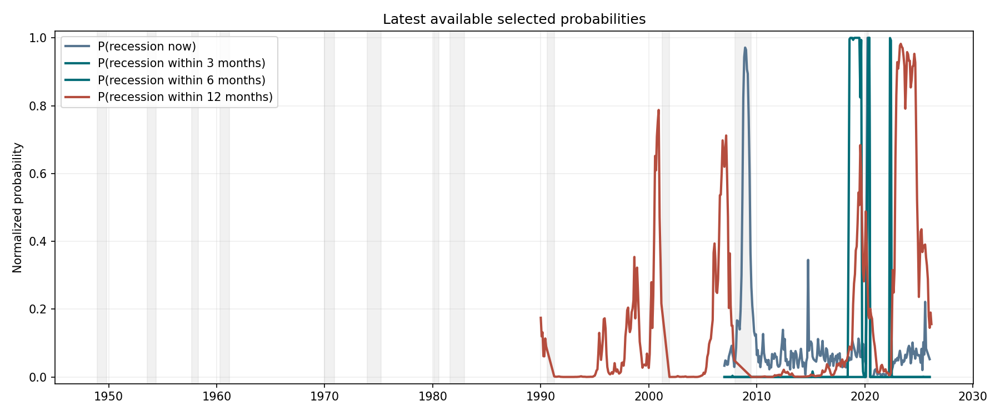
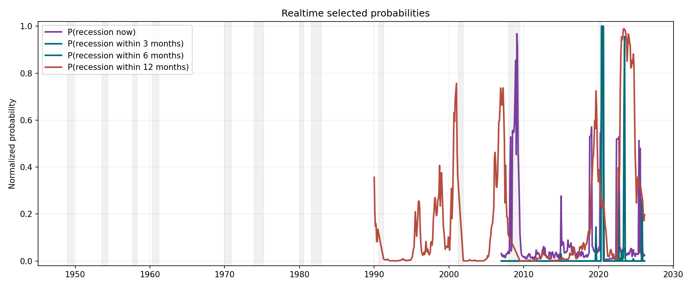
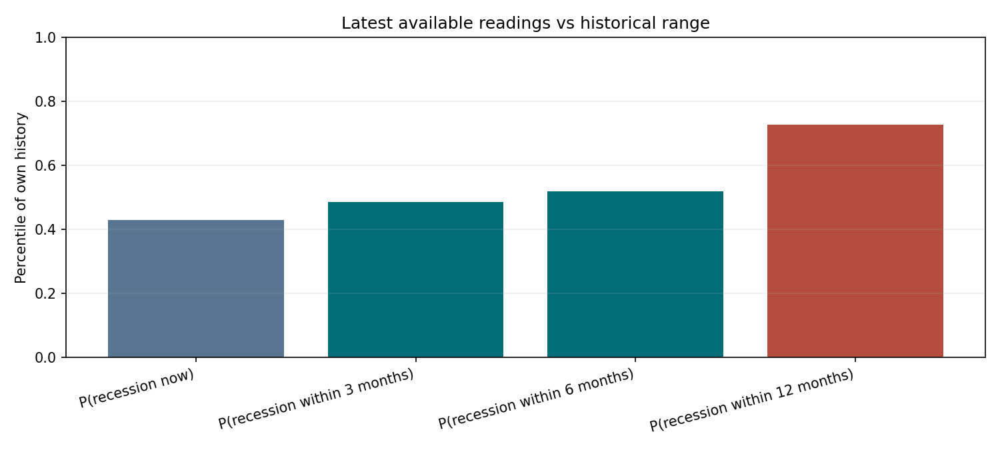
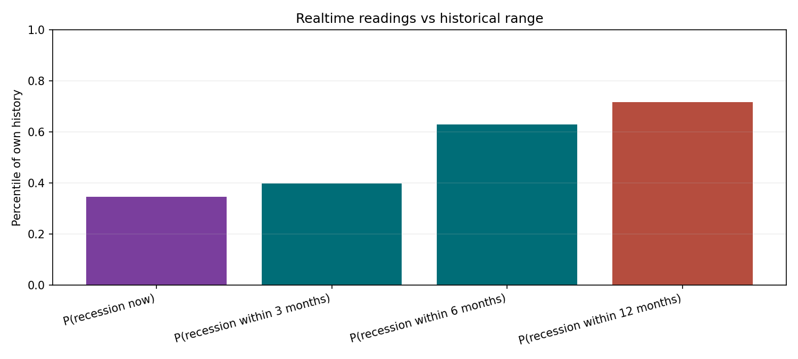
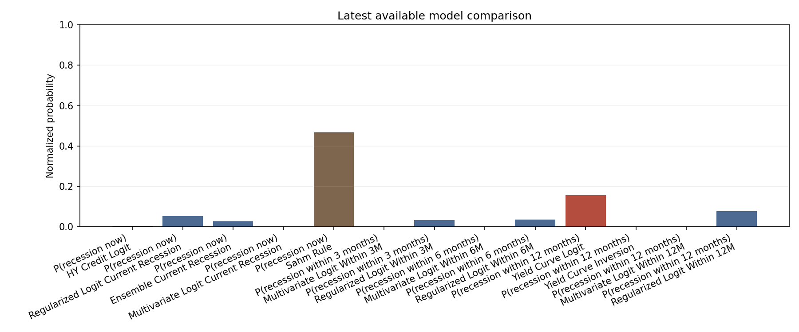
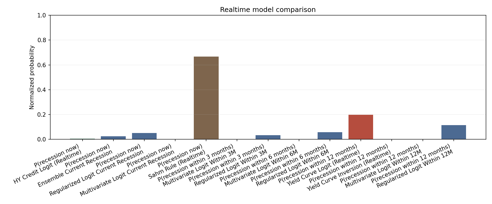

Episode Warning Timing

Investor-facing snapshots are shown in both latest-available and realtime form, with quality-gated model selection and benchmark fallback when expanded models do not clear the governance thresholds.
| Mode | Target | Selected model | As of | Probability | Historical percentile | Regime | Quality gates | Selection note |
|---|---|---|---|---|---|---|---|---|
| Latest available | P(recession now) | Regularized Logit Current Recession | 2026-01-01 | 0.0525 | 0.4292 | low risk | pass | Selected from eligible candidates |
| Latest available | P(recession within 3 months) | Multivariate Logit Within 3M | 2026-01-01 | 0.0000 | 0.4854 | low risk | fail | No benchmark candidate available; using best available model. |
| Latest available | P(recession within 6 months) | Multivariate Logit Within 6M | 2026-01-01 | 0.0000 | 0.5194 | low risk | fail | No benchmark candidate available; using best available model. |
| Latest available | P(recession within 12 months) | Yield Curve Logit | 2026-03-01 | 0.1560 | 0.7268 | rising risk | pass | No expanded model passed quality gates; falling back to benchmark. |
| Mode | Target | Selected model | As of | Probability | Historical percentile | Regime | Quality gates | Selection note |
|---|---|---|---|---|---|---|---|---|
| Realtime | P(recession now) | Ensemble Current Recession | 2026-03-01 | 0.0255 | 0.3463 | low risk | pass | Selected from eligible candidates |
| Realtime | P(recession within 3 months) | Multivariate Logit Within 3M | 2026-03-01 | 0.0000 | 0.3981 | low risk | fail | No benchmark candidate available; using best available model. |
| Realtime | P(recession within 6 months) | Multivariate Logit Within 6M | 2026-03-01 | 0.0000 | 0.6303 | low risk | fail | No benchmark candidate available; using best available model. |
| Realtime | P(recession within 12 months) | Yield Curve Logit (Realtime) | 2026-03-01 | 0.1977 | 0.7168 | rising risk | pass | No expanded model passed quality gates; falling back to benchmark. |
| Target | Latest available model | Latest available as of | Latest available probability | Latest available regime | Latest available note | Realtime model | Realtime as of | Realtime probability | Realtime regime | Realtime note | Probability delta | Material gap |
|---|---|---|---|---|---|---|---|---|---|---|---|---|
| P(recession now) | Regularized Logit Current Recession | 2026-01-01 | 0.0525 | low risk | Selected from eligible candidates | Ensemble Current Recession | 2026-03-01 | 0.0255 | low risk | Selected from eligible candidates | 0.0270 | False |
| P(recession within 3 months) | Multivariate Logit Within 3M | 2026-01-01 | 0.0000 | low risk | No benchmark candidate available; using best available model. | Multivariate Logit Within 3M | 2026-03-01 | 0.0000 | low risk | No benchmark candidate available; using best available model. | 0.0000 | False |
| P(recession within 6 months) | Multivariate Logit Within 6M | 2026-01-01 | 0.0000 | low risk | No benchmark candidate available; using best available model. | Multivariate Logit Within 6M | 2026-03-01 | 0.0000 | low risk | No benchmark candidate available; using best available model. | -0.0000 | False |
| P(recession within 12 months) | Yield Curve Logit | 2026-03-01 | 0.1560 | rising risk | No expanded model passed quality gates; falling back to benchmark. | Yield Curve Logit (Realtime) | 2026-03-01 | 0.1977 | rising risk | No expanded model passed quality gates; falling back to benchmark. | -0.0417 | False |
rising risk (driven by P(recession within 12 months))
rising risk (driven by P(recession within 12 months))
- The term spread is positive at 0.62, but the curve is steepening.
- HY spreads are relatively contained at 3.16, with the recent direction widening.
- Aggregate recession risk remains in the lower part of its configured range.
- Model disagreement is moderate; direction is shared but conviction differs.
- Latest-available and realtime snapshots are broadly aligned.
- The term spread is positive at 0.52, but the curve is steepening.
- HY spreads are relatively contained at 2.92, with the recent direction widening.
- The Sahm gap is 0.33, below the trigger but no longer comfortably benign.
- Aggregate recession risk remains in the lower part of its configured range.
- Model disagreement is moderate; direction is shared but conviction differs.
- Latest-available and realtime snapshots are broadly aligned.
Model disagreement is moderate; direction is shared but conviction differs.
- Equities: lean toward quality and earnings resilience.
- Duration: some extra duration ballast becomes more useful.
- Credit beta: lower-quality spread exposure deserves more caution.
- Defensives / cash: optionality and liquidity buffers gain value.
| Mode | Target | Model | Model family | Selected | Selection status | Quality gates | Gate reasons | Fallback reason | AUC | ECE | Episode recall | Max false alarm streak | Probability |
|---|---|---|---|---|---|---|---|---|---|---|---|---|---|
| Latest available | P(recession now) | HY Credit Logit | Benchmark | False | eligible_candidate | pass | 0.9743 | 0.0324 | 0.50 | 1.0 | 0.0026 | ||
| Latest available | P(recession now) | Regularized Logit Current Recession | Expanded logit | True | selected | pass | 0.9507 | 0.0596 | 1.00 | 2.0 | 0.0525 | ||
| Latest available | P(recession now) | Ensemble Current Recession | Ensemble | False | eligible_candidate | pass | 0.9498 | 0.0306 | 1.00 | 2.0 | 0.0263 | ||
| Latest available | P(recession now) | Multivariate Logit Current Recession | Expanded logit | False | eligible_candidate | pass | 0.8590 | 0.0663 | 1.00 | 2.0 | 0.0000 | ||
| Latest available | P(recession now) | Sahm Rule | Benchmark | False | rejected | fail | max_false_alarm_streak>12 | 0.9102 | NaN | 1.00 | 19.0 | 0.4667 | |
| Latest available | P(recession within 3 months) | Multivariate Logit Within 3M | Expanded logit | True | selected | fail | episode_recall<0.50 | No benchmark candidate available; using best available model. | 0.8283 | 0.1170 | 0.00 | 14.0 | 0.0000 |
| Latest available | P(recession within 3 months) | Regularized Logit Within 3M | Expanded logit | False | rejected | fail | auc<0.65; episode_recall<0.50 | 0.5625 | 0.0073 | 0.00 | 0.0 | 0.0326 | |
| Latest available | P(recession within 6 months) | Multivariate Logit Within 6M | Expanded logit | True | selected | fail | episode_recall<0.50 | No benchmark candidate available; using best available model. | 0.7762 | 0.0680 | 0.00 | 2.0 | 0.0000 |
| Latest available | P(recession within 6 months) | Regularized Logit Within 6M | Expanded logit | False | rejected | fail | episode_recall<0.50 | 0.7053 | 0.0349 | 0.00 | 1.0 | 0.0351 | |
| Latest available | P(recession within 12 months) | Yield Curve Logit | Benchmark | True | selected | pass | No expanded model passed quality gates; falling back to benchmark. | 0.8561 | 0.0696 | 0.75 | 25.0 | 0.1560 | |
| Latest available | P(recession within 12 months) | Yield Curve Inversion | Benchmark | False | eligible_candidate | pass | 0.8561 | NaN | 0.75 | 25.0 | 0.0000 | ||
| Latest available | P(recession within 12 months) | Multivariate Logit Within 12M | Expanded logit | False | rejected | fail | episode_recall<0.50; ece>0.15 | 0.8166 | 0.1880 | 0.00 | 6.0 | 0.0000 | |
| Latest available | P(recession within 12 months) | Regularized Logit Within 12M | Expanded logit | False | rejected | fail | episode_recall<0.50 | 0.7846 | 0.0905 | 0.00 | 0.0 | 0.0768 | |
| Realtime | P(recession now) | HY Credit Logit (Realtime) | Benchmark | False | eligible_candidate | pass | 0.9149 | 0.0234 | 0.50 | 2.0 | 0.0053 | ||
| Realtime | P(recession now) | Ensemble Current Recession | Ensemble | True | selected | pass | 0.8976 | 0.0389 | 1.00 | 5.0 | 0.0255 | ||
| Realtime | P(recession now) | Regularized Logit Current Recession | Expanded logit | False | eligible_candidate | pass | 0.8322 | 0.0212 | 0.50 | 3.0 | 0.0510 | ||
| Realtime | P(recession now) | Multivariate Logit Current Recession | Expanded logit | False | eligible_candidate | pass | 0.8201 | 0.1054 | 1.00 | 5.0 | 0.0000 | ||
| Realtime | P(recession now) | Sahm Rule (Realtime) | Benchmark | False | rejected | fail | max_false_alarm_streak>12 | 0.8273 | NaN | 0.75 | 22.0 | 0.6667 | |
| Realtime | P(recession within 3 months) | Multivariate Logit Within 3M | Expanded logit | True | selected | fail | episode_recall<0.50 | No benchmark candidate available; using best available model. | 0.7333 | 0.0438 | 0.00 | 3.0 | 0.0000 |
| Realtime | P(recession within 3 months) | Regularized Logit Within 3M | Expanded logit | False | rejected | fail | auc<0.65; episode_recall<0.50 | 0.5943 | 0.0098 | 0.00 | 0.0 | 0.0332 | |
| Realtime | P(recession within 6 months) | Multivariate Logit Within 6M | Expanded logit | True | selected | fail | episode_recall<0.50 | No benchmark candidate available; using best available model. | 0.7755 | 0.0834 | 0.00 | 4.0 | 0.0000 |
| Realtime | P(recession within 6 months) | Regularized Logit Within 6M | Expanded logit | False | rejected | fail | episode_recall<0.50 | 0.7353 | 0.0174 | 0.00 | 1.0 | 0.0565 | |
| Realtime | P(recession within 12 months) | Yield Curve Logit (Realtime) | Benchmark | True | selected | pass | No expanded model passed quality gates; falling back to benchmark. | 0.8661 | 0.0781 | 0.75 | 24.0 | 0.1977 | |
| Realtime | P(recession within 12 months) | Yield Curve Inversion (Realtime) | Benchmark | False | eligible_candidate | pass | 0.8678 | NaN | 0.75 | 25.0 | 0.0000 | ||
| Realtime | P(recession within 12 months) | Multivariate Logit Within 12M | Expanded logit | False | rejected | fail | episode_recall<0.50; ece>0.15 | 0.8128 | 0.2032 | 0.00 | 17.0 | 0.0000 | |
| Realtime | P(recession within 12 months) | Regularized Logit Within 12M | Expanded logit | False | rejected | fail | episode_recall<0.50 | 0.7928 | 0.1115 | 0.00 | 0.0 | 0.1153 |
| Mode | Target | Model | As of | Probability | Raw score | Calibrated score | Historical percentile | AUC | Episode recall | Quality gates | Gate reasons | Regime |
|---|---|---|---|---|---|---|---|---|---|---|---|---|
| Latest available | P(recession now) | HY Credit Logit | 2026-03-01 | 0.0026 | NaN | 0.0026 | 0.1082 | 0.9743 | 0.50 | pass | low risk | |
| Latest available | P(recession now) | Regularized Logit Current Recession | 2026-01-01 | 0.0525 | 0.0525 | 0.0525 | 0.4292 | 0.9507 | 1.00 | pass | low risk | |
| Latest available | P(recession now) | Ensemble Current Recession | 2026-01-01 | 0.0263 | 0.0263 | 0.0263 | 0.4292 | 0.9498 | 1.00 | pass | low risk | |
| Latest available | P(recession now) | Multivariate Logit Current Recession | 2026-01-01 | 0.0000 | 0.0000 | 0.0000 | 0.7478 | 0.8590 | 1.00 | pass | low risk | |
| Latest available | P(recession now) | Sahm Rule | 2026-02-01 | 0.4667 | NaN | 0.2333 | 0.7216 | 0.9102 | 1.00 | fail | max_false_alarm_streak>12 | elevated risk |
| Latest available | P(recession within 3 months) | Multivariate Logit Within 3M | 2026-01-01 | 0.0000 | 0.0000 | 0.0000 | 0.4854 | 0.8283 | 0.00 | fail | episode_recall<0.50 | low risk |
| Latest available | P(recession within 3 months) | Regularized Logit Within 3M | 2026-01-01 | 0.0326 | 0.0326 | 0.0326 | 0.1262 | 0.5625 | 0.00 | fail | auc<0.65; episode_recall<0.50 | low risk |
| Latest available | P(recession within 6 months) | Multivariate Logit Within 6M | 2026-01-01 | 0.0000 | 0.0000 | 0.0000 | 0.5194 | 0.7762 | 0.00 | fail | episode_recall<0.50 | low risk |
| Latest available | P(recession within 6 months) | Regularized Logit Within 6M | 2026-01-01 | 0.0351 | 0.0351 | 0.0351 | 0.2670 | 0.7053 | 0.00 | fail | episode_recall<0.50 | low risk |
| Latest available | P(recession within 12 months) | Yield Curve Logit | 2026-03-01 | 0.1560 | NaN | 0.1560 | 0.7268 | 0.8561 | 0.75 | pass | rising risk | |
| Latest available | P(recession within 12 months) | Yield Curve Inversion | 2026-03-01 | 0.0000 | NaN | -0.6153 | 0.8897 | 0.8561 | 0.75 | pass | low risk | |
| Latest available | P(recession within 12 months) | Multivariate Logit Within 12M | 2026-01-01 | 0.0000 | 0.0000 | 0.0000 | 0.6845 | 0.8166 | 0.00 | fail | episode_recall<0.50; ece>0.15 | low risk |
| Latest available | P(recession within 12 months) | Regularized Logit Within 12M | 2026-01-01 | 0.0768 | 0.0768 | 0.0768 | 0.5194 | 0.7846 | 0.00 | fail | episode_recall<0.50 | low risk |
| Mode | Target | Model | As of | Probability | Raw score | Calibrated score | Historical percentile | AUC | Episode recall | Quality gates | Gate reasons | Regime |
|---|---|---|---|---|---|---|---|---|---|---|---|---|
| Realtime | P(recession now) | HY Credit Logit (Realtime) | 2026-03-01 | 0.0053 | NaN | 0.0053 | 0.0779 | 0.9149 | 0.50 | pass | low risk | |
| Realtime | P(recession now) | Ensemble Current Recession | 2026-03-01 | 0.0255 | 0.0255 | 0.0255 | 0.3463 | 0.8976 | 1.00 | pass | low risk | |
| Realtime | P(recession now) | Regularized Logit Current Recession | 2026-03-01 | 0.0510 | 0.0510 | 0.0510 | 0.3766 | 0.8322 | 0.50 | pass | low risk | |
| Realtime | P(recession now) | Multivariate Logit Current Recession | 2026-03-01 | 0.0000 | 0.0000 | 0.0000 | 0.7186 | 0.8201 | 1.00 | pass | low risk | |
| Realtime | P(recession now) | Sahm Rule (Realtime) | 2026-03-01 | 0.6667 | NaN | 0.3333 | 0.7701 | 0.8273 | 0.75 | fail | max_false_alarm_streak>12 | high / imminent risk |
| Realtime | P(recession within 3 months) | Multivariate Logit Within 3M | 2026-03-01 | 0.0000 | 0.0000 | 0.0000 | 0.3981 | 0.7333 | 0.00 | fail | episode_recall<0.50 | low risk |
| Realtime | P(recession within 3 months) | Regularized Logit Within 3M | 2026-03-01 | 0.0332 | 0.0332 | 0.0332 | 0.1469 | 0.5943 | 0.00 | fail | auc<0.65; episode_recall<0.50 | low risk |
| Realtime | P(recession within 6 months) | Multivariate Logit Within 6M | 2026-03-01 | 0.0000 | 0.0000 | 0.0000 | 0.6303 | 0.7755 | 0.00 | fail | episode_recall<0.50 | low risk |
| Realtime | P(recession within 6 months) | Regularized Logit Within 6M | 2026-03-01 | 0.0565 | 0.0565 | 0.0565 | 0.4929 | 0.7353 | 0.00 | fail | episode_recall<0.50 | low risk |
| Realtime | P(recession within 12 months) | Yield Curve Logit (Realtime) | 2026-03-01 | 0.1977 | NaN | 0.1977 | 0.7168 | 0.8661 | 0.75 | pass | rising risk | |
| Realtime | P(recession within 12 months) | Yield Curve Inversion (Realtime) | 2026-03-01 | 0.0000 | NaN | -0.5242 | 0.8922 | 0.8678 | 0.75 | pass | low risk | |
| Realtime | P(recession within 12 months) | Multivariate Logit Within 12M | 2026-03-01 | 0.0000 | 0.0000 | 0.0000 | 0.6635 | 0.8128 | 0.00 | fail | episode_recall<0.50; ece>0.15 | low risk |
| Realtime | P(recession within 12 months) | Regularized Logit Within 12M | 2026-03-01 | 0.1153 | 0.1153 | 0.1153 | 0.6303 | 0.7928 | 0.00 | fail | episode_recall<0.50 | low risk |






| model_name | target_name | horizon | split_name | test_start | auc | precision | recall | f1 | false_positive_months | brier_score | ece | event_hit_rate | median_timing_months | average_timing_months | flagged_3m_ahead_share | flagged_6m_ahead_share | episode_recall | max_false_alarm_streak | event_hits | n_events |
|---|---|---|---|---|---|---|---|---|---|---|---|---|---|---|---|---|---|---|---|---|
| yield_curve_logit | within_12m | 12 | fixed_1990_holdout | 1990-01-01 | 0.8561 | 0.3023 | 0.3023 | 0.3023 | 30 | 0.1128 | 0.0696 | 0.75 | 9.0 | 9.6667 | 0.75 | 0.75 | 0.75 | 25 | 3 | 4 |
| yield_curve_inversion | within_12m | 12 | fixed_1990_holdout | 1990-01-01 | 0.8561 | 0.3182 | 0.3256 | 0.3218 | 30 | NaN | NaN | 0.75 | 9.0 | 9.6667 | 0.75 | 0.75 | 0.75 | 25 | 3 | 4 |
| hy_credit_logit | current_recession | 0 | fixed_2007_holdout | 2007-01-01 | 0.9743 | 0.9000 | 0.4500 | 0.6000 | 1 | 0.0396 | 0.0324 | 0.50 | 9.0 | 9.0000 | 0.00 | 0.00 | 0.50 | 1 | 1 | 2 |
| sahm_rule | current_recession | 0 | post_1990_monitoring | 1990-01-01 | 0.9102 | 0.3614 | 0.8333 | 0.5042 | 53 | NaN | NaN | 1.00 | 1.5 | 1.5000 | 0.00 | 0.00 | 1.00 | 19 | 4 | 4 |


Recession periods are shaded in gray on time-series charts. Expanded-model probabilities are calibrated before investor-facing selection. Rule models remain threshold-based monitors.